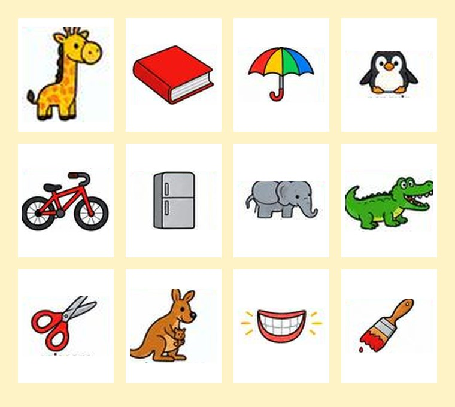
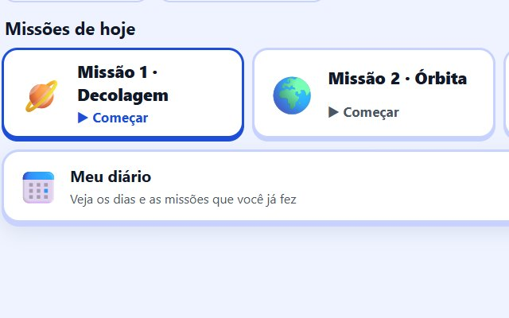
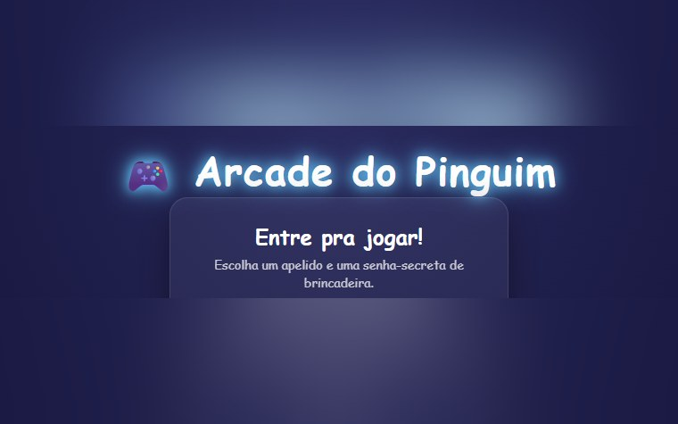
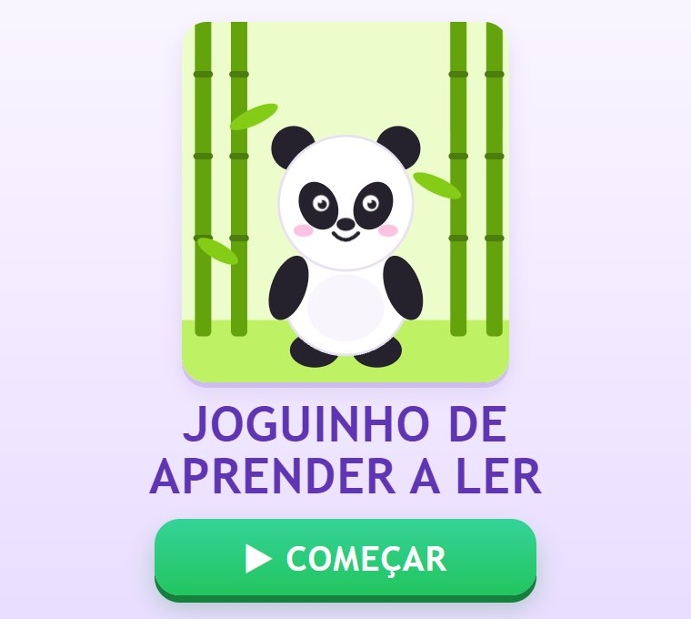
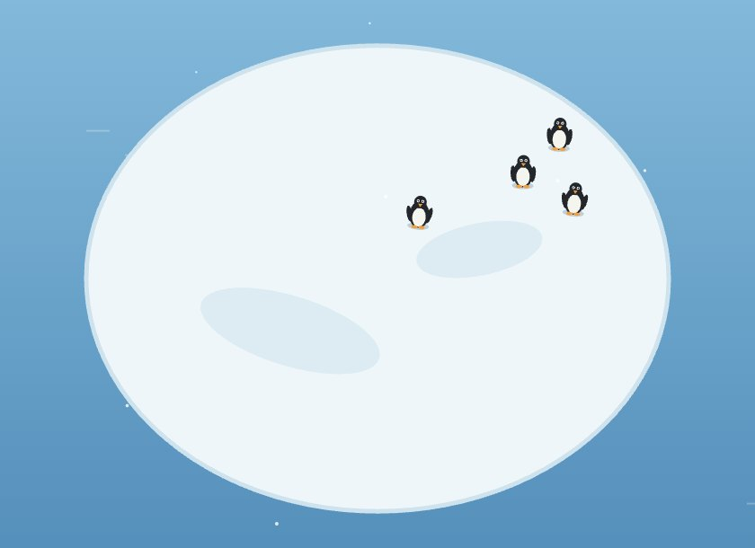
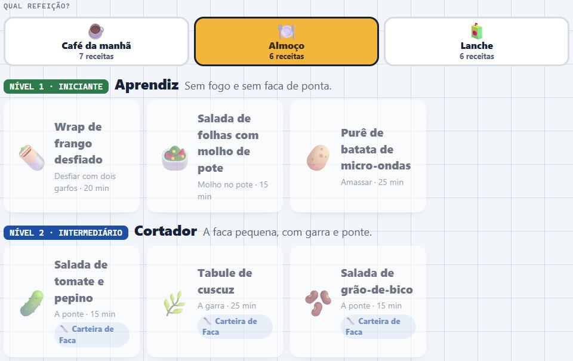

Em casa
O mesmo jeito de fazer, levado para dentro de casa: jogos de estudo, um fliperama e uma cozinha da família, feitos sob medida e sem anúncio. O progresso fica salvo no aparelho de quem joga; só o placar do Arcade é compartilhado entre os jogadores.

Spelling BeeTreino para a final do Spelling Bee do 3º ano: as 100 palavras da escola com as figuras dos cards, os nomes das letras em inglês e um palco para soletrar em voz alta.

Missões de matemáticaMissões diárias de tabuada, adição, subtração, prova real e multiplicação, com patentes, níveis por tema e um diário dos dias de estudo.

Arcade do PinguimUm fliperama da família com 13 jogos — bandeiras, capitais, charadas, cobrinha, labirinto, campo minado, pênalti e outros —, prêmio diário e placar entre os jogadores. Entra-se com apelido e senha de brincadeira.

Aprender a lerUm jogo para começar a ler, com um amigo para cuidar, prêmios para colecionar e um álbum. Sem punição: errar faz parte.

Jogos do PinguimDois jogos de navegador: a Ilha do Pinguim, uma ilha 3D que muda a cada partida, e a Colônia, onde os pinguins pescam e constroem ninhos.

Vamos CozinharPara a família aprender a cozinhar junta, com o celular na bancada: receitas por refeição e por nível, do que se faz sem fogo e sem faca até o primeiro prato de fogão, com o adulto no fogo.